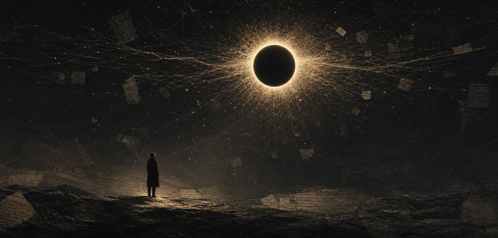
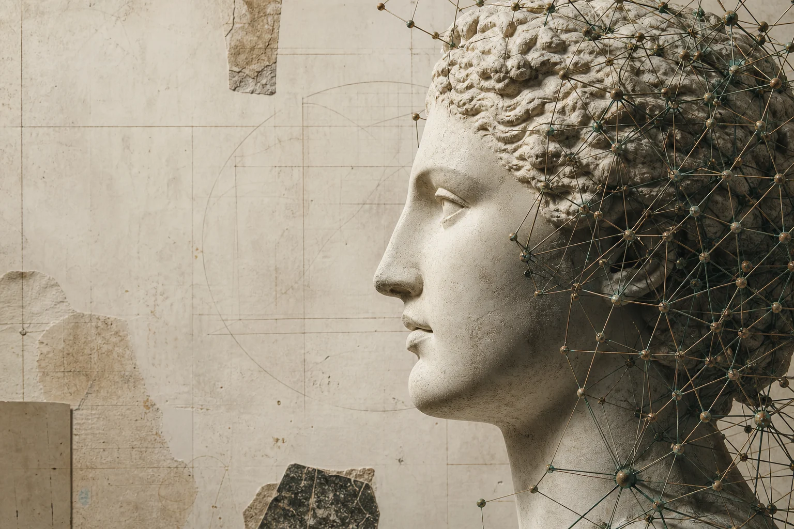
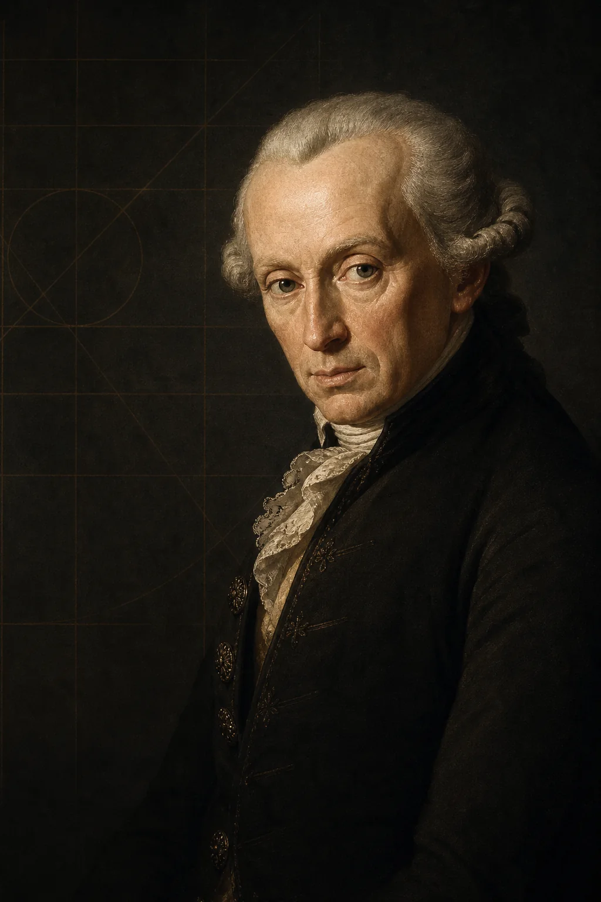
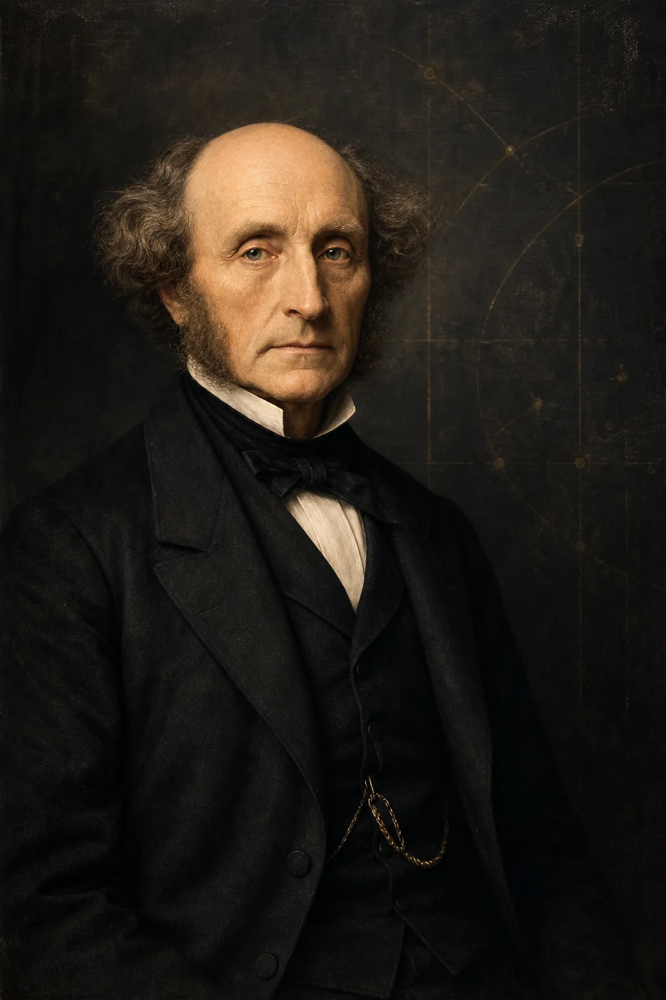
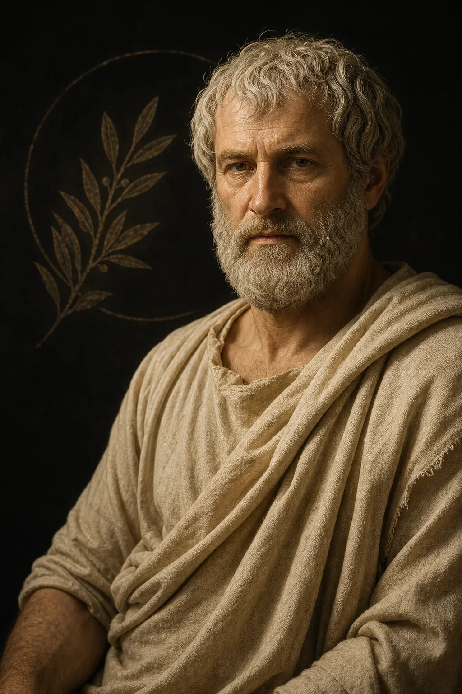
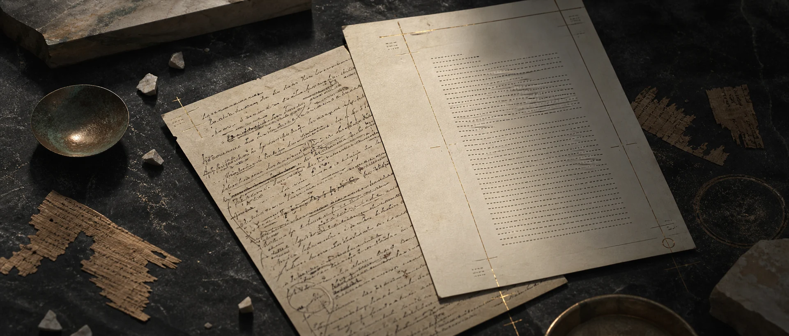

Может ли философский текст существовать без философа?

Но сходство формы не означает сходства природы. Кейс «Нейросетевое затмение» ставит простой вопрос: если нейросеть сгенерировала философский аргумент — это всё ещё философия?
Центр тяжести смещается на человека, который санкционирует использование ИИ и присваивает результаты. Философствование неотделимо от практики рефлексии и ответственного выбора.
Текст, сгенерированный нейросетью, при всей своей формальной корректности не может претендовать на статус философского результата — если человек не сохраняет контроль над концептуальной рамкой.

Не «может ли машина написать», а кто отвечает за написанное.



Кант · Милль · Донат
Автор несёт безусловную обязанность интеллектуальной честности. Сокрытие использования ИИ — нарушение морального закона, запрещающего ложь.
Делегирование нейросети ключевых этапов мышления — постановки проблемы, аргументации, выводов — лишает автора возможности исполнить моральный долг. Этот долг: самостоятельная ответственность за логику рассуждения.
Милль
ИИ может снизить когнитивный порог для черновиков, ускорить редактирование, повысить продуктивность. Но цена — снижение качества аргументации, усреднённые формулировки, эрозия доверия к публикациям.
Краткосрочные выгоды от ускорения исследовательского цикла не компенсируют ущерб от системного обесценивания информации. Доверие — базовое условие функционирования академического института.
Аристотель · Разин
Интеллектуальные добродетели — проницательность, рассудительность, способность к аргументации — формируются только в практике самостоятельного мышления.
Благо заключается не во внешнем продукте, а в совершенствовании разумной деятельности. Если ключевые операции делегируются нейросети, автор лишается возможности упражнять добродетели.
Деонтологический, утилитаристский и добродетельный подходы сходятся в требовании сохранять решающую роль человека как ответственного субъекта.
Даже при вспомогательном использовании нейросети автор обязан сохранять способность к рефлексии над содержанием и отвечать за выводы.
Нейросеть допустима на этапах:
Подробное описание этапов, делегированных нейросети, и этапов, выполненных человеком
Автор способен критически осмыслить всё содержание и обосновать выводы
Устная защита, проверка способности воспроизвести ход мысли
Нейросеть не может быть соавтором. У неё нет моральной ответственности, интенциональности, рефлексивного осознания утверждений.

Маркировка «использован ИИ» — первый шаг, но недостаточный. Без верификации — проверки логов, аудита черновиков — декларация остаётся неподтверждённым заявлением.
Без чётких критериев — порогового процента, обязательности раскрытия этапов — меры прозрачности теряют регулятивную силу.
Редакционные метки не решают проблему распределения ответственности. Машина — «среда, а не разум». Она не может быть субъектом авторства.
Но традиционные концепции авторства, предполагающие единичного мыслящего субъекта, не способны описать ситуацию, где значительная часть работы делегирована алгоритму.
А в том, что люди постепенно перестанут философствовать самостоятельно.
Систематическое делегирование нейросети ключевых этапов рассуждения ведёт к атрофии навыков самостоятельного мышления. Лёгкость получения готового текста может отвратить автора от трудоёмкого процесса размышления.
Дисциплина рискует потерять не отдельные тексты, а саму способность к порождению нового философского знания.
Три подхода — деонтология, утилитаризм, этика добродетели — сходятся в одном: человек остаётся решающим субъектом. Даже при вспомогательном использовании нейросети автор обязан сохранять рефлексию и отвечать за выводы.
Граница между философским текстом и его имитацией проходит не по степени технологического вмешательства, а по линии интенционального контроля.